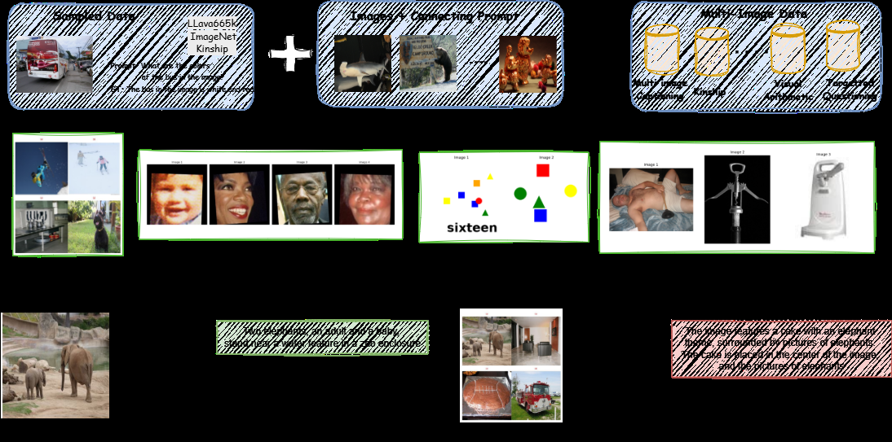
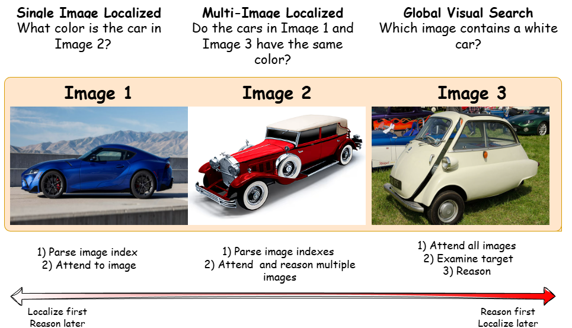
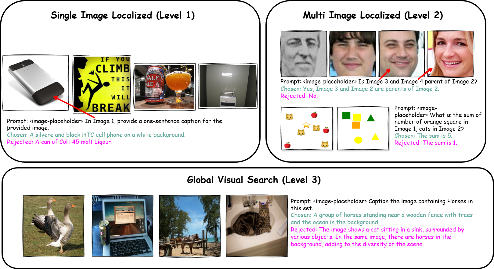
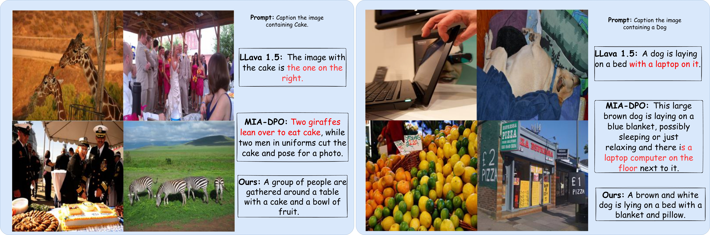

Overview of our method. We transform single-image data sources (e.g., LLaVA 665k, ImageNet) into multi-image datasets across visual modalities with progressively increasing cognitive load. Our synthetic transformation pipeline creates task hierarchies that advance from basic single-image understanding to complex multi-image reasoning requiring visual comparison, spatial reasoning, and cross-modal integration.
Vision-Language Models (VLMs) have demonstrated remarkable progress in single-image understanding, yet effective reasoning across multiple images remains challenging. We identify a critical capability gap in existing multi-image alignment approaches: current methods focus primarily on localized reasoning with pre-specified image indices ("Look at Image 3 and..."), bypassing the essential skills of global visual search and autonomous cross-image comparison. To address this limitation, we introduce a Simple-to-Hard (S2H) learning framework that systematically constructs multi-image preference data across three hierarchical reasoning levels requiring an increasing level of capabilities: (1) single-image localized reasoning, (2) multi-image localized comparison, and (3) global visual search. Unlike prior work that relies on model-specific attributes, such as hallucinations or attention heuristics, to generate preference pairs, our approach leverages prompt-driven complexity to create chosen/rejected pairs that are applicable across different models. Through extensive evaluations on LLaVA and Qwen-VL models, we show that our diverse multi-image reasoning data significantly enhances multi-image reasoning performance, yielding significant improvements over baseline methods across benchmarks. Importantly, our approach maintains strong single-image reasoning performance while simultaneously strengthening multi-image understanding capabilities, thus advancing the state of the art for holistic visual preference alignment.
We argue that simply incorporating multi-image data is not enough. We explicitly define the capabilities needed for multi-image reasoning via a hierarchy:

We generate our multi-image preferences without manual human annotation. Chosen/rejected pairs are structurally designed across the three levels to teach targeted search versus general summarization.

We evaluate our approach on complex multi-image benchmarks (BLINK, MANTIS, NLVR2) as well as single-image benchmarks (MMStar, POPE) to ensure single-image performance is preserved.
| Models | Parameter | BLINK | MANTIS | NLVR2 | Average |
|---|---|---|---|---|---|
| LLaVA-v1.5 | 7B | 37.10 | 41.90 | 52.10 | 43.70 |
| + MIA-DPO | 7B | 42.90 | 44.20 | 54.20 | 47.10 |
| + S2H-DPO (Ours) | 7B | 43.40 | 47.93 | 55.59 | 48.97 |
| Qwen2.5-VL | 7B | 54.29 | 68.66 | 74.28 | 65.74 |
| + MIA-DPO | 7B | 41.28 | 59.45 | 74.18 | 58.30 |
| + S2H-DPO (Ours) | 7B | 55.85 | 74.19 | 74.67 | 68.24 |

@inproceedings{shukla2026s2hdpo,
title={S2H-DPO: Hardness-Aware Preference Optimization for Vision-Language Models},
author={Shukla, Nitish and Jandial, Surgan and Ross, Arun},
booktitle={Findings of the Association for Computational Linguistics: ACL 2026},
pages={36612--36623},
year={2026}
}